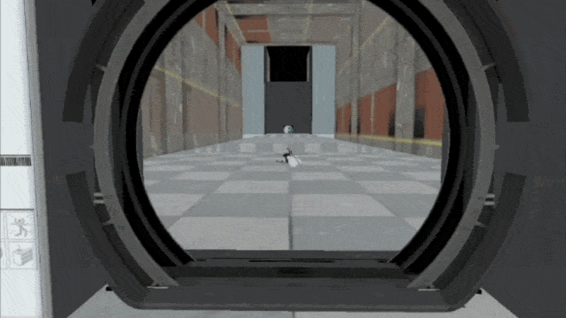
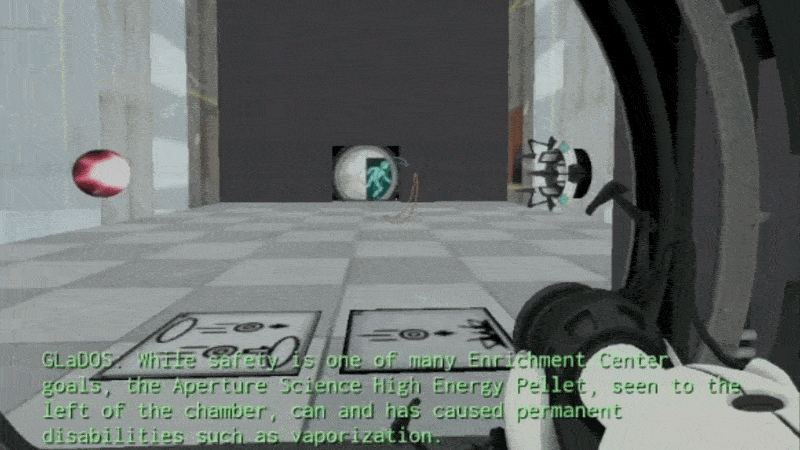
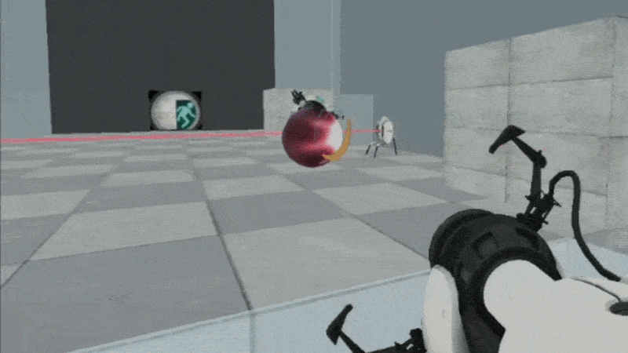
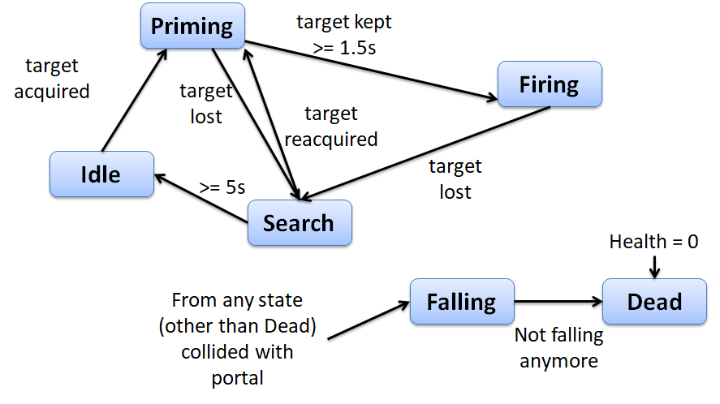

Portal Rendering & Teleportation
- Rendered linked portal views through a transformed portal camera.
- Converted player and object transforms between paired portal spaces.
- Handled portal crossing separately from ordinary wall collision.
Technical Project
Custom C++ Engine | SDL | OpenGL
30-second engine demo
Portal Rendering Prototype
A Portal clone built in a custom C++ engine using SDL and OpenGL. The project combines first-person controls, portal placement, portal view rendering, teleportation, puzzle actors, turret AI, lasers, health, and audio feedback into a Portal-style test environment.

GIF slot
gifs/portalclone-portals.gif

GIF slot
gifs/portalclone-puzzles.gif

GIF slot
gifs/portalclone-turrets.gif

GIF slot
gifs/portalclone-lasers.gif

Diagram slot
images/portalclone-turret-state-machine.png
Turrets use a finite state machine to manage target acquisition, priming, firing, searching, falling, and death. Portal collision can interrupt any active behavior state, which kept displacement logic centralized instead of scattered across every AI branch.
The portal camera needed to preserve the player's relative position and orientation across a linked portal pair, so the view through the portal felt spatially continuous instead of like a disconnected render target.
Collision rules had to distinguish between approaching a portal, looking through its surface, and actually crossing its plane while avoiding jitter or repeated teleport triggers.
Reloading a level required clearing actor lists, collision references, portal links, input playback, sounds, and temporary state so repeated test runs behaved consistently.